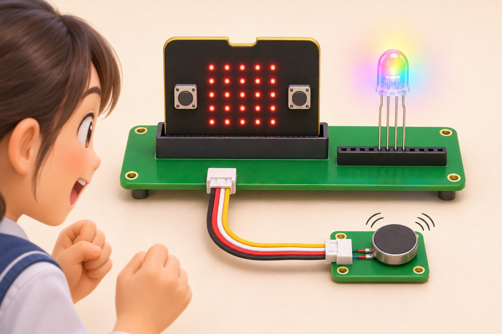
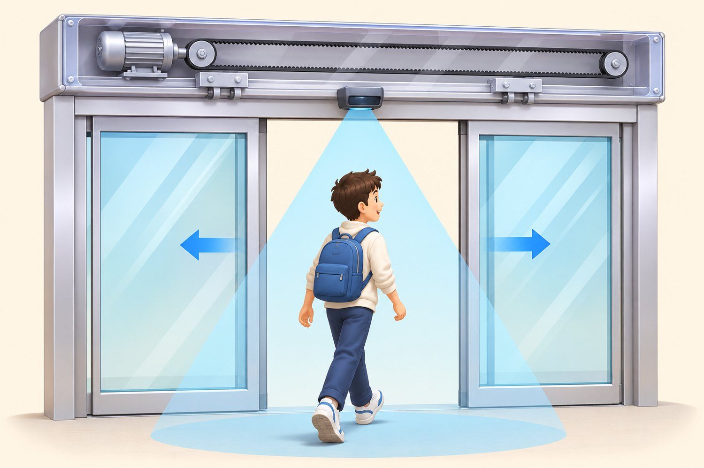
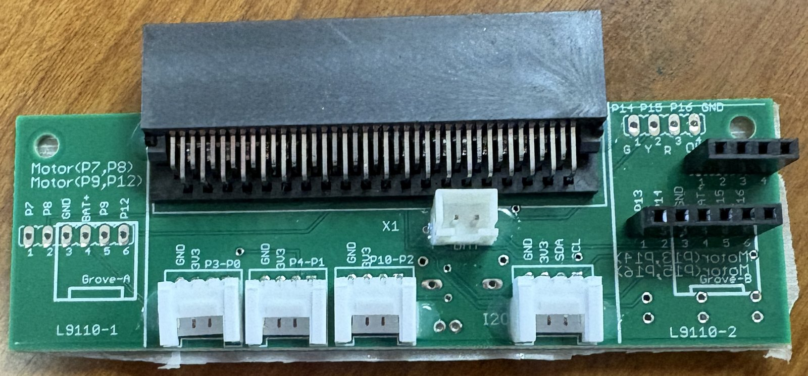
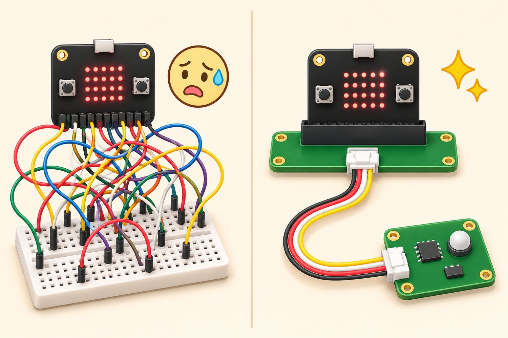
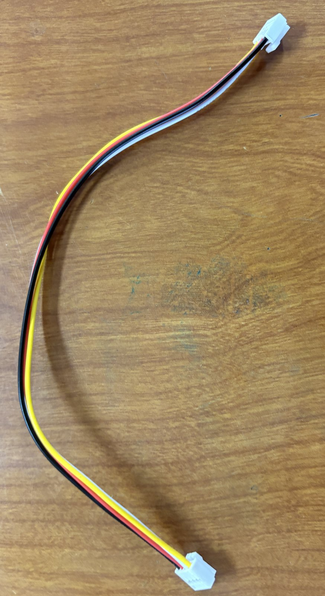
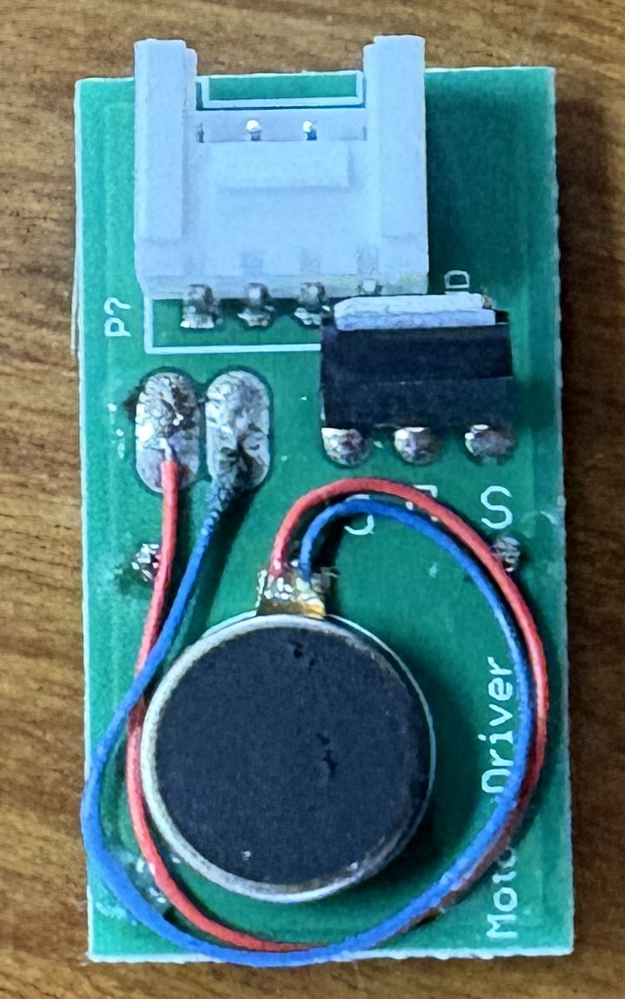
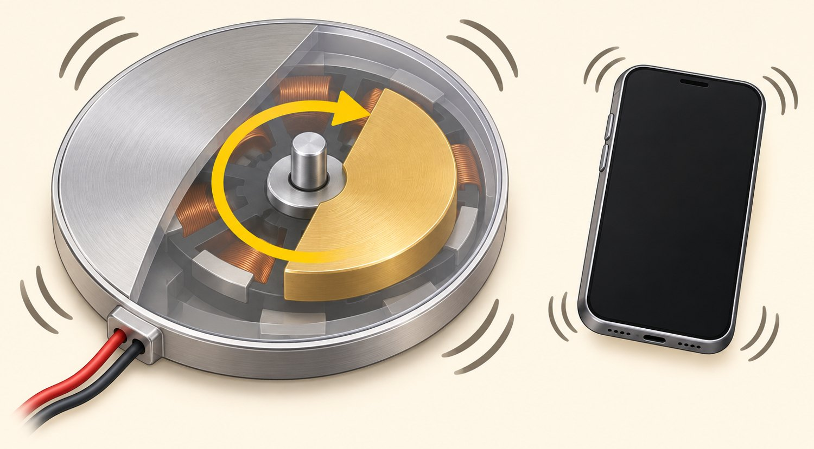
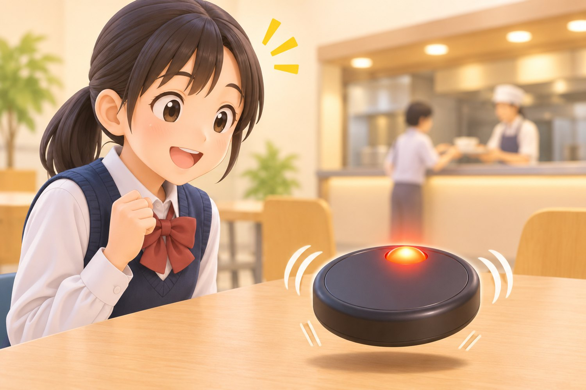
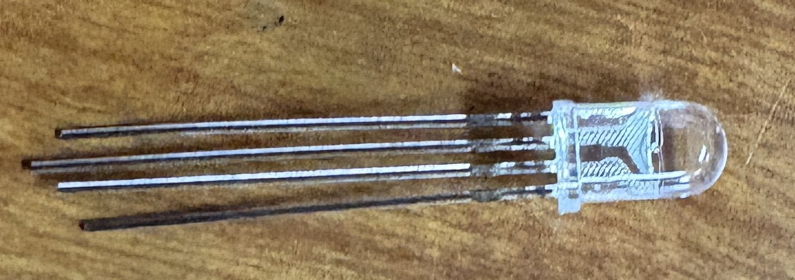

技術・家庭科〔技術分野〕3年
拡張ボードにつないで
ブルブルさせて、光らせよう

① 計測・制御は センサ → コンピュータ → アクチュエータ
の順に動くことがわかる
② 拡張ボードとGroveケーブルで、装置をつなげる
③ プログラムで振動モータと3色LEDを動かせる

① 見つける
ドアの上のセンサが
人が近づいたことを感じる
② 判断する
コンピュータが
「開けよう」と決める
③ 動かす
モータがドアを開ける
周りのようすを
はかる（計測）
人感・温度・明るさ
プログラムどおりに
判断する
micro:bit
命令を受けて
動く・光る・鳴る
モータ・LED・ブザー
コンピュータとセンサ・アクチュエータの間で、信号をつなぎ・変換する
部分をインタフェースという。きょうの拡張ボードもその仲間
🔘 A・Bボタン
📐 かたむき・ゆれ（加速度）
☀️ 明るさ 🌡 温度
🔴 5×5のLED表示
🔊 スピーカー（V2）
でも…
🌱 土の水分をはかりたい
🚪 人が来たら知らせたい
💨 風を送りたい
→ 外の装置をつなぐ必要がある！

① micro:bit を差しこむ ② Groveコネクタ（白・4か所） ③ LEDの端子micro:bit の下の金色の端子は小さくて、そのままでは線をつなぎにくい → 拡張ボードが端子を引き出してくれる

🔌 差すだけ
はんだ付け・配線いらず
🧩 向きが決まっている
逆に差さらない＝まちがえにくい
🔁 つけかえ自由
センサも装置も同じ形

| 今回使う「P3-P0」コネクタの場合 | ||
|---|---|---|
| 線の色 | ボードの印字 | 役わり |
| 黒 | GND | 電源（−） |
| 赤 | 3V3 | 電源（＋3.3V） |
| 白 | P3 | 信号 |
| 黄 | P0 | 信号 |
電源の線2本＋信号の線2本。信号の線は、はかった結果や
動きの指示を伝える。振動モータは黄色のP0で動かす
人感センサ 光距離センサ
土壌水分センサ 温度センサ
押しボタン 炎センサ 降雨センサ
ほか 20種類以上
振動モータ 3色LED
サーボモータ 扇風機（DCモータ）
水中ポンプ 小さなディスプレイ
きょうは、マークの2つを動かす
参考：北海道教育大学 石川研究室「センサ・アクション装置の使い方」

Grove振動モータUSBは抜いたまま、ケーブルを振動モータに差す
もう片方を拡張ボードのP3-P0に「カチッ」
つないだら最後にUSBでパソコンにつなぐ
MakeCode（makecode.microbit.org）で組む
📂「デジタルで出力する」は
高度なブロック → 入出力端子 の中
1 ＝ P0を高い電圧に → モータON
0 ＝ P0を低い電圧に → モータOFF
⬇ ダウンロードして micro:bit に書きこむ → ボタンAを押す
⭐ チャレンジ
ボタンBで「ブッ・ブッ」と
短く2回ふるえさせよう

しくみを表した模式図
中でかたよったおもりが
回るので、全体がゆれる
micro:bit の端子から出せる
電流は小さい → 基板のトランジスタ
（FET）がスイッチになり、電源から
大きな電流をモータに流す
信号を受けて動かす部分も
インタフェースの役目

📳 スマホのバイブ
🔔 フードコートの呼び出しベル
🎮 ゲームのコントローラ
⌚ 腕時計のアラーム
考えの例
・静かな場所で迷惑をかけない
・耳が聞こえにくい人にも伝わる
・うるさい場所でも体で気づける

今回のLED：GND共通USBを抜いてから差す → 足どうしが
ふれていないか確認 → USBをつなぐ
① いちばん長い足 → GND
② 長い足の1本だけの側が赤
→ BAT+をとばしてP15
③ 残り2本 → P14・P13
📎 choppermoon1623-tech.github.io/microbit-rgb/ （Chrome か Edge で開く）
アプリのページ下「micro:bit 側のプログラム」をコピー
MakeCode の JavaScript の中身を全部置きかえて貼る → ダウンロード
ハートが出たらOK（振動モータのプログラムは上書きされる）
MakeCode のタブを閉じる（開いたままだと接続できない）
「micro:bit と接続」→ 一覧から選んで「接続」
赤・緑・青のフェーダーを動かして、色を作る（0〜255）
色が逆になる…→ 長い足がGNDに入っているか確認。「アノードコモン」のチェックは外したまま
| 赤 ＋ 緑 | 黄 |
| 緑 ＋ 青 | 水色 |
| 青 ＋ 赤 | 赤むらさき |
| 3つ全部 | 白 |
ボタンで光を消したり点けたりできる。実物のLEDは
色ごとに明るさがちがうので、数字で調整する
| 赤 | 緑 | 青 | |
|---|---|---|---|
| 黄 | 255 | 255 | 0 |
| 水色 | ? | ? | ? |
| 赤むらさき | ? | ? | ? |
| 白 | ? | ? | ? |
| ⭐オレンジ | ? | ? | ? |
| ⭐自分の色 | ? | ? | ? |
数字が大きいほど明るく光る
0＝消える 255＝いちばん明るい
⭐ 発展：オレンジは黄に近い
→ 緑を少しへらすと…？
うまくいった数字をワークシートに記録
✋ ケーブルはコネクタをつまんで抜く
線を引っぱると中で切れる
⚡ LEDの足をBAT+に差さない
足どうしがふれないようにする
🔌 つなぎかえはUSBを抜いてから
電気が流れたまま差しかえない
📦 LEDは足を曲げすぎず袋にもどす
何度も曲げると足が折れる
はかる
判断する（micro:bit）
振動モータ・3色LED
拡張ボード＋Groveケーブルなら、合うコネクタにつなぎ、
プログラムを変えて、いろいろな装置を組み合わせられる
🔭 次回から：身近な困りごとを見つけて、センサ＋アクチュエータで解決する
「計測・制御 逆引きシステム」で、使える装置をさがせる
① きょうできたことを
◎・〇・△でふりかえる
② センサ＋振動モータかLEDで
あったら便利な装置を考える
例
土壌水分センサで
土がかわいたら、
LEDを赤く光らせる。
→ 水やりを忘れがちな
植物係が助かる